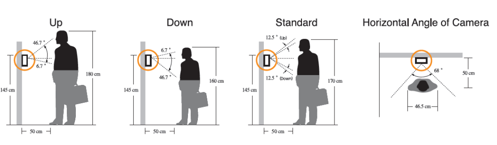

Citofonía Edificios
Edificios pequeños sin portería
Commax ofrece una línea de video citofonía análoga de bajo costo para edificios de 2 a 16 apartamentos sin vigilante.
El sistema le permite al visitante comunicarse directamente con el residente y este puede realizar apertura de la puerta.
Al video citófono de la vivienda, se le pueden conectar hasta dos frente de calle o un frente de calle y un video timbre instalado en la puerta de la vivienda.
El cableado se realiza directamente desde el frente de calle a cada uno de los video citófonos usando 4 hilos de cualquier categoría.
Ver brochureEdificios con portería y acceso peatonal y vehicular
Commax ofrece el sistema mas moderno para comunicaciones y control de acceso en edificios de vivienda nuevos y ya construidos.
El sistema integra tres soluciones en una:
Control de acceso
Videocitofonía
Videotimbre
El sistema controla hasta 4 accesos (peatonales y vehiculares), 400 viviendas en dos torres y 400 videotimbres que reemplazan el ojo mágico de las puertas.
La instalación del sistema se realiza utilizando un solo cable UTP.
El sistema cuanta con una "consola" digital que le permite al vigilante comunicarse con los visitantes y los residentes.
Este sistema remplaza el concepto de portero y le abre la posibilidad a la copropiedad reducir los costos derivados del mismo.
Solicitar cotizaciónFuncionamiento
El video de la izquierda ilustra el funcionamiento del sistema.
Componentes
Video portero (Frente de calle)
Ubicado en los accesos peatonales y vehiculares.
Con cámara a color con iluminador IR para la noche, display luminosos tipo LCD, teclado y lector de tarjetas de proximidad.
En el, el visitante digita el numero del apartamento al que se dirige o el botón para llamar al vigilante.
El residente ingresa usando su contraseña o su tarjeta de proximidad tipo Mifare de 13,56 Mhz
Incluye caja de montaje en pared.
Tamaño: 12,3 cm x 31,4 cm x 5 cm
Videocitófono
Ubicado en cada una de las viviendas en la cocina o alcoba principal.
Modelos disponibles con pantallas a color tipo LED de alta resolución y bajo consumo de 3.5 , 4, 5 y 7 pulgadas.
Lo modelos mas recientes, incluyen memoria interna para registro fotográfico del visitante cuando este timbra.
Permite comunicarse y abrir los accesos del edificio, comunicarse con la puerta de la vivienda y con el vigilante.
Sirve como "ojo mágico" permitiendo ver quien se encuentra frente a la puerta de la vivienda y los accesos del edificio.
Videocitófonos con auricular
Pantalla a color, disponibles con pantallas de 3.5, 4 y 5 pulgadas con opción de memoria interna para almacenar fotografías de visitantes.
Videocitófonos manos libres
Pantalla a color, disponibles con pantallas de 3.5, 4 y 7 pulgadas con opción de memoria interna para almacenar fotografías de visitantes.
Citófono y timbre voz
El sistema permite así mismo instalar un sistema de voz únicamente, usando un timbre con micrófono y altoparlantes y un citófono.
El citófono también puede ser usado con sistemas de video para comunicación de voz con puerta de vivienda, accesos del edificio y vigilante. Permite apertura de accesos.
Video timbre
Ubicado en la entrada del apartamento, en reemplazo del timbre.
Cámara a color, micrófono, altoparlante e iluminador LED para la oscuridad.
El visitante oprime el botón y su imagen se muestra en las pantallas del los video citófonos en donde además suena una melodía para indicarle al residente de su presencia.
Angulo de visión de la cámara
Teléfono guarda
Ubicado en la recepción, permite comunicación con los apartamentos y los accesos peatonales y vehiculares a los cuales puede abrir la puerta pulsando el botón "abrir".
Requiere un solo cable UTP para su conexión, minimizando el numero de cables en la portería.
El sistema permite conectar hasta 2 teléfonos guardas.